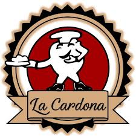

"El sabor de la tradición en cada bocado"
Bienvenidos a Panadería la Cardona, donde la tradición y la frescura se combinan para ofrecerte productos horneados de la más alta calidad. Desde panes recién salidos del horno, hasta pasteles artesanales y galletas caseras, cada uno de nuestros productos está hecho con dedicación y pasión para que todos puedan disfrutar de nuestras delicias. Visítanos y déjate cautivar por el aroma y sabor único de nuestras creaciones. ¡Te esperamos con los brazos abiertos!.


Dedicados a hacer el mejor pan y pasteles a demás de brindarte el mejor servicio
Ser la panadería líder en la región, reconocida por nuestra dedicación a la calidad, la tradición y el sabor inconfundible de nuestros productos, creando momentos especiales para nuestros clientes y contribuyendo al bienestar de la comunidad
Brindar a nuestros clientes una experiencia única a través de productos frescos, deliciosos y elaborados con los mejores ingredientes, fusionando la tradición artesanal con la innovación. Nos comprometemos a ofrecer un servicio excepcional, manteniendo la cercanía con nuestros clientes y contribuyendo al desarrollo local